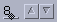

JSpinner - A Simple Sequence ContainerThis document describes the new Swing component, JSpinner.
One of the most commonly requested new Swing components is a spinner - a single line input field that lets the user select an number or an object value from an ordered set. Spinners typically provide a pair of tiny arrow buttons for stepping through the possible values, the up/down arrow keys also cycle through the values. The user may also be allowed to type a (legal) value directly into the spinner. Although combo boxes provide similar functionality, spinners are sometimes preferred because they don't require a drop down list that can obscure important data.
The bugtraq report that corresponds to this change is: 4290529.
Spinners are common in modern GUIs. Here are some examples from some popular look and feels and from OpenWindows:
 |
 |
 |
 |
 |
| Windows | CDE/Motif | JLF | Mac Aqua | OpenWindows |
All of the spinners deliver very simple behavior: clicking on the arrow buttons changes the fields value and, when the spinner has the focus, the keyboard up and down arrow keys do the same. In some applications the spinners up or down arrow button is disabled when the upper or lower limit of the spinner has been reached, in other cases the spinner just resets its value to the opposite extreme.
JSpinner, SpinnerModel,
SpinnerListModelThe JSpinner
class is a simple Swing container that manages three children: two
arrow buttons and a single component, called the editor that
displays the spinner's value. The value displayed by the spinner is
encapsulated by model of a sequence of objects called a SpinnerModel.
public interface SpinnerModel {
Object getValue();
void setValue(Object);
Object getNextValue();
Object getPreviousValue();
void addChangeListener(ChangeListener x);
void removeChangeListener(ChangeListener x);}
The SpinnerModel interface is similar to
ListModel - they both represent a sequence a values -
however there are some important differences:
size method.ListModels sequence, which are read-only. This
difference reflects the different roles of JList and
JSpinner. The former was designed to simplify
selecting one or more items from a list and the latter for
entering a single value directly.The relationship between the JSpinner and its model
is simple. The editor component monitors the model with a
ChangeListener and always displays the object returned
by SpinnerModel.getValue(). The up and down arrow
buttons update the value by calling
setValue(getNextValue()) or
setValue(getPreviousValue()) respectively. The
getNextValue and getPreviousValue methods
return null when the end or the beginning of the
sequence has been reached, so the arrow button actions have to
check for null before updating the models value. If
the editor is a writable field of some kind, it's responsible for
honoring the constraints defined by the model or handling the
IllegalArgumentException thrown by
setValue for invalid values.
The SpinnerListModel
provides support for two common mutable sequence types:
java.util.List, and an array of objects. For example
to create a JSpinner that lets the user choose a day
of the week in the default locale one could write:
String[] days = new DateFormatSymbols().getWeekdays();
SpinnerModel model = new SpinnerListModel(days);
JSpinner spinner = new JSpinner(model);
In addition to initializing the model property of
the spinner, these constructors create an editor component that
displays the SpinnerModel's value and can
be used to change it. The protected
JSpinner.createEditor method is used for this and, by
default, it creates a JFormattedTextField that has
been configured to display the model.
To find or initialize a spinners current value one can either
use the models value property or use the convenience
JSpinner value property which just
delegates to the model. For example, using the spinner configured
in the example above, the following two statements are
equivalent:
String selectedDay = spinner.getModel().getValue().toString();
String selectedDay = spinner.getValue().toString();
Setting the spinner's value is similar. Attempts to set the
SpinnerModel value to an object that the model doesn't
support cause an IllegalArgumentException to be
thrown.
Dates and numbers are two of the most common applications for a
spinner component. To simplify spinning these types, two additional
SpinnerModel implementation classes are provided:
SpinnerDateModel and
SpinnerNumberModel.
SpinnerDateModelOne of the most common uses of a spinner is to compactly present
an editable date. Here's a simple example of creating a
JSpinner that allows the user to enter a (fully
localized) date:
SpinnerDateModel model = new SpinnerDateModel();
JSpinner spinner = new JSpinner(model);
Date value = model.getDate();
In this example, the JSpinner constructor has
created a JFormattedTextField editor that's configured
for editing dates and it has added a ChangeListener to
the SpinnerDateModel to keep the editor
and the model in sync.
Here's the SpinnerDateModel
API. We've added three new read/write properties:
start, end, and stepSize and
a read-only date property that returns the models
value cast to a Date.
public class SpinnerDateModel extends AbstractSpinnerModel {
public SpinnerDateModel(Date value, Comparable start, Comparable end, int stepSize)
public SpinnerDateModel()
public void setStart(Comparable start)
public Comparable getStart()
public void setEnd(Comparable end)
public Comparable getEnd()
public Object getNextValue()
public Object getPreviousValue()
public Date getDate()
public Object getValue()
public void setValue(Object value)}
The startDate and endDate properties
can be null to indicate that there is no lower or
upper limit. The no-arguments SpinnerDateModel
constructor initializes both the start and end date to
null, the initial value of the model is the current
date.
The value of the stepSize property must be one of
the java.util.Calendar constants that specify a field
within a Calendar. The getNextValue and
getPreviousValue methods change the date forward or
backwards by this amount. For example, if stepSize is
Calendar.DAY_OF_WEEK, then nextValue
produces a Date that's 24 hours after the current
value, and previousValue produces a
Date that's 24 hours earlier.
The legal values for stepSize are:
Calendar.ERACalendar.YEARCalendar.MONTHCalendar.WEEK_OF_YEARCalendar.WEEK_OF_MONTHCalendar.DAY_OF_MONTHCalendar.DAY_OF_YEARCalendar.DAY_OF_WEEKCalendar.DAY_OF_WEEK_IN_MONTHCalendar.AM_PMCalendar.HOURCalendar.HOUR_OF_DAYCalendar.MINUTECalendar.SECONDCalendar.MILLISECONDThe default SpinnerDateModel editor
adjusts the stepSize property based on the text cursor
position. For example if the cursor moves into the editor's month
subfield then the incrementSize would be changed to
Calendar.DAY_OF_MONTH.
Spinners are often used to present editable integers and real
numbers that represent everything from temperature to stock prices.
The SpinnerNumberModel
provides basic support for all of the basic Java
Number types, from Byte to
Double.
To create a spinner that allows the user to pick a real multiple of 1/8 between 0.0 and 1000.0, with an initial value of 500.0, one could write:
SpinnerNumberModel model = new SpinnerNumberModel(500.0, 0.0, 1000.0, 0.625);
JSpinner spinner = new JSpinner(model);
double value = model.getNumber().doubleValue();
In this example, the JSpinner constructor has
created a JFormattedTextField editor that's configured
for editing real numbers and it has added a
ChangeListener to the SpinnerNumberModel
to keep the editor and the model in sync.
Here's a summary of the SpinnerNumberModel API.
We've added three new read/write properties: minimum,
maximum, and stepSize and a read-only
number property that returns the models
value cast to a Number.
public class SpinnerNumberModel extends AbstractSpinnerModel {
public SpinnerNumberModel(Number value, Comparable minimum, Comparable maximum, Number stepSize)
public SpinnerNumberModel(int value, int minimum, int maximum, int stepSize)
public SpinnerNumberModel(double value, double minimum, double maximum, double stepSize)
public SpinnerNumberModel()
public void setMinimum(Comparable minimum)
public Comparable getMinimum()
public void setMaximum(Comparable maximum)
public Comparable getMaximum()
public void setStepSize(Number stepSize)
public Number getStepSize()
public Object getNextValue()
public Object getPreviousValue()
public Number getNumber()
public Object getValue()
public void setValue(Object value)}
As with the SpinnerDateModel, the
minimum and maximum properties can be
null to indicate that there is no lower or upper
limit. The stepSize property just specifies how much
to add or subtract from the value to compute the
nextValue or the previousValue.
Support for spinners added six classes and one interface
(SpinnerModel) to the javax.swing
package:
Additionally, SpinnerUI has been added to the
javax.swing.plaf package and
BasicSpinnerUI to the
javax.swing.plaf.basic package: